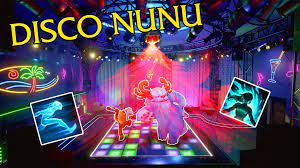

What is L9?
How L9 Rose in Popularity
It is thought that L9 was created by 0bsess and RATIRL. It was originally made in order to gain traction and fame among social media and ranked solo queue. L9 ended up gaining a heavy following mainly via Twitter. By this time the club had expanded and had two more members: Ap0calypse and Selfmademan. Their rise in popularity stemmed from their raw talent yet toxic nature; they would be seen spamming “xd” and question mark pings. They were also very well known for elo boosting and starting controversy with other content-creators. An example of said controversy was when RATIRL tweeted about Dekar173: “Don’t try to trash talk if you play on one of the worst servers and lose in lowelo while streaming for your 500 viewers”.
The Infamous L9 Club Tag
The L9 club initially only had the original four members and some of their close friends. Thanks to their built-up fame, the original L9 members began to sell spaces for large amounts of money. Being part of the real L9 club was seen as impressive and imposing. As people started to see the potential for some extra money, fake L9 clubs began to spring up across the game. Many people also include L9 in their name, to try to demonstrate their toxic nature.